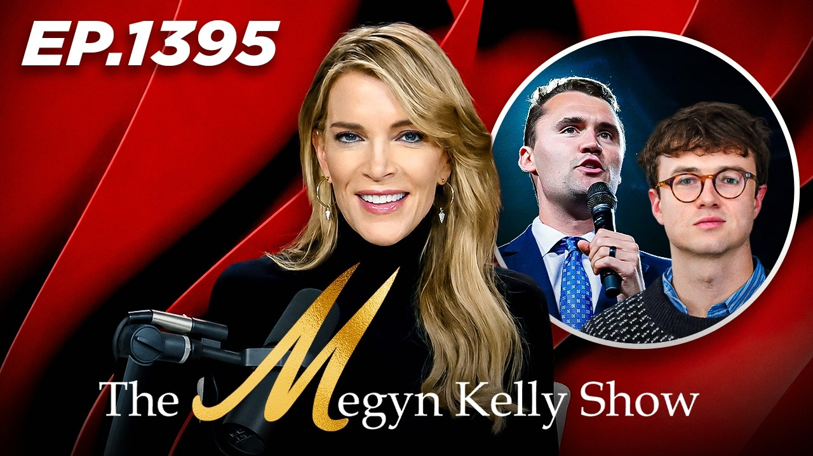

Video guide · ex-Anthropic researcher
Jacob Coxon on YouTube
20 videos, every one over an hour, sorted by how much of it is actually him.
The story so far
A researcher quit Anthropic with a public warning, and then went on a media tour.
Why so many hour-long videos mention him.
Jacob Coxon is a former Anthropic researcher. On 8 September 2026 he resigned and posted a long warning about where AI is heading. The post went viral.
Over the following weeks he gave long interviews (The Megyn Kelly Show on 10 Sep, the PBD Podcast on 6 Oct), appeared in TV news segments, and in October testified at a New York City Council hearing on AI safeguards, on a whistleblower panel with Daniel Kokotajlo and Alex Turner.
His warning split people. Some podcasts treat him as a brave whistleblower; others call the timing a coordinated "doomer" campaign. This page collects both sides, but labels every video honestly: does he actually speak in it, and for how long?
How to read the labels
Five labels, from "it's all him" to "we couldn't tell".
GUEST · 2
A long-form interview with him. The most Coxon per minute.
TESTIMONY · 3
The NYC Council AI hearing. He speaks for roughly 40 minutes including Q&A.
CLIPS · 4
Someone else's show that plays parts of his TV or hearing appearances.
ABOUT HIM · 9
He is discussed, quoted or criticised, but you don't hear him.
UNVERIFIED · 2
Title names him, but no transcript was available to confirm he appears.
All 20
Filter by label, or search a channel or topic.
Tap a thumbnail to open it on YouTube in a new tab.
No videos match. Try another word or label.
Good to know
A few honest caveats.
Every video link.
Compiled 27 October 2026.